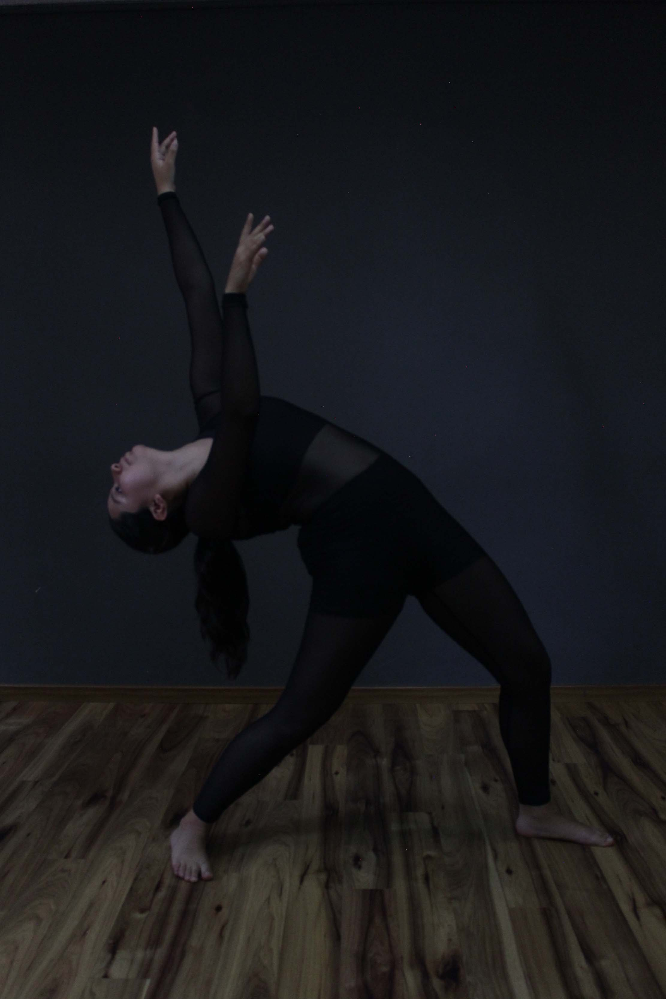
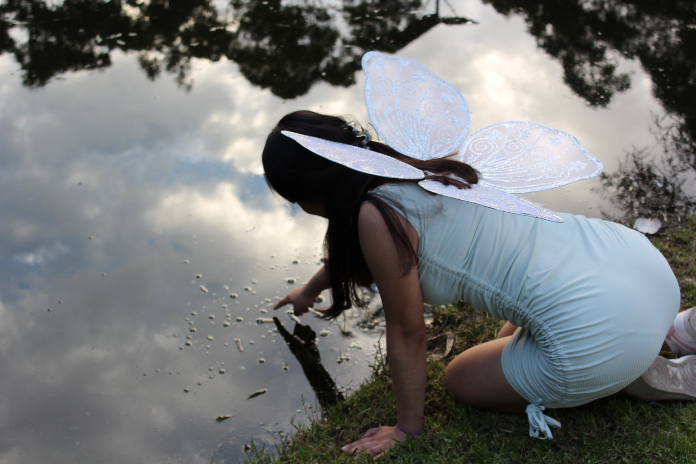
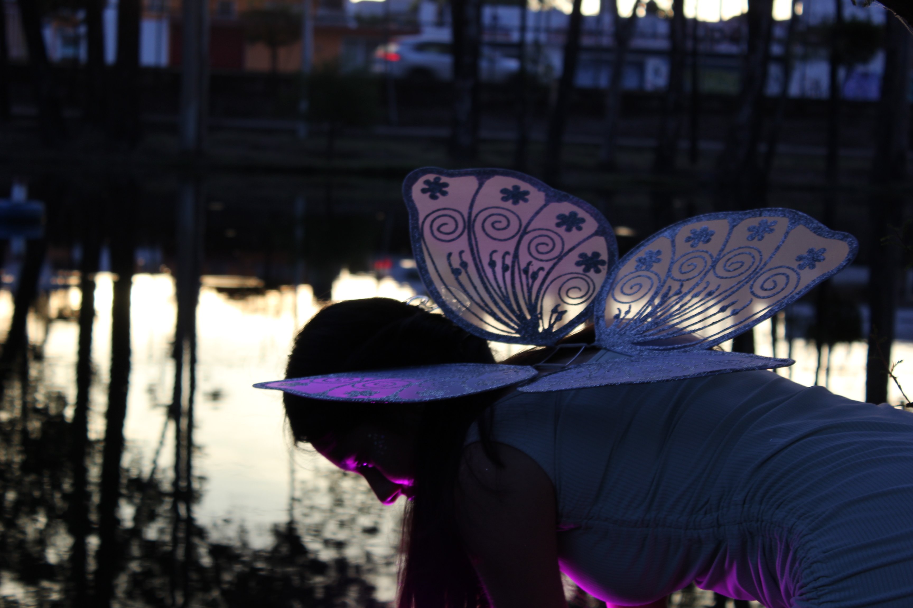

Fotografía en las artes
Mi materia favorita y lo que más disfruto hacer dentro de la carrera de Diseño Gráfico es la fotografía. Para este proyecto se nos pidió crear algo que nos representara, así que fusioné mi amor por la fotografía con mi amor por la danza, pidiéndole a una de mis mejores amigas y al mismo tiempo una de mis bailarinas favoritas que me ayudara con la fotografía, teniendo como resultado la siguiente imagen.
Fotografía de fantasía
 Este proyecto fue creado en noviembre de 2023, donde en la materia de fotografía profesional se nos pidió crear imágenes según una temática, la cual fue escogida de fantasía, creando así una sesión de fotos que ha sido de mis favoritas de todos los trabajos que he hecho.
En esta ocasión, la modelo fue amiga de mi compañera de equipo de la materia. A pesar de no conocerla, congeniamos muy bien y el hecho de platicar para la sesión nos ayudó a conectar y crear un buen proyecto. Así también nos ayudó otra de sus amigas a maquillarla, peinarla y acomodar todo durante la toma de fotografías. Hubo profesionalismo por parte de todas, por lo que resultó bien.
 Dichas fotos fueron tomadas en la Facultad de Arquitectura de la BUAP, específicamente en el lago para seguir con el tema d efantasía. Se utilizó únicamente una luz que cambiaba de colores, haciendo énfasis en los colores azul y morado; sin embargo, todo lo demás fue con luz y escenario natural. No se encuentran editadas.
Disfruté mucho de trabajar con nuevas personas, nuevos conceptos y escenarios que representaron hasta cierto punto un desafío por todas las cosas naturales que no podíamos controlar como la luz solar y de repente el atardecer por la hora; sin embargo, supimos aprovechar cada cosa y obtener lo mejor para unos buenos resultados.
Titulación
Tuve la oportunidad de ver a mi primo, una de las personas que más quiero, titulándose por lo que ese día quise grabar y tomar fotografías del evento. A pesar de que temblaba por la emoción, logré obtener buenos resuktados que él también disfrutó y fue así como cubrí uno de mis primeros eventos fuera de una sesión normal.

Fotografía de paisaje
Otra de las cosas que disfruto mucho fotografiar son los paisajes, especialmente si es en movimiento. Primero que nada por la magia de la naturaleza, los colores que presenta, texturas, cambios y diversas cosas que hacen única a una foto de paisaje.
En segundo lugar, el movimiento representa un reto para mí, así que en cierta parte descubrir las diferentes tomas, ángulos, creaciones y demás enfoques que puedo obtener en pocos segundos, me resulta fascinante.
Si bien no soy la mejor en este tema, ni en los otros, disfruto mucho de hacerlo y compartirlo con personas que quiero y me inspiran. Cuando salgo a un viaje, llevo mi cámara, tomo todas las fotografías que puedo y si veo una que me recuerda a alguien, la comparto con esa persona.
Esta en específico fue tomada rumbo a Atlixco, Puebla mientras iba de viaje con toda mi familia.
Filtro de imagen